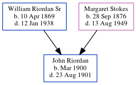

John A Riordan 1900 - 1901
[ Home ] | [ Calendar ] | [ Surnames Index ] | [ Census Index ] | [ Family History ]The child of William Riordan Sr and Margaret Stokes, John Riordan, the great-uncle of Michele Copp (née Phillips), was born in Atlanta, Fulton County, Georgia, USA in Mar 19001,2. In 1900, he was living in Black Hall, Fulton, Georgia1.
He died on Aug 23, 1901 in Atlanta2 (was 17 months old and died at home) and was buried there after Aug 23, 19012.
Parents
- William Joseph Sr was born on Apr 10, 1869
- Margaret Louise was born on Sep 28, 1876
Citations
- 1900 United States Federal Census Online publication - Provo, UT, USA: MyFamily.com, Inc., 2004.Original data - United States of America, Bureau of the Census. Twelfth Census of the United States, 1900. Washington, D.C.: National Archives and Records Administration, 1900. T623, 1854 rolls.
- U.S., Find a Grave® Index, 1600s-Current Ancestry.com Operations, Inc. (Find a Grave. Find a Grave®. www.findagrave.com.)
Family Tree
Generated by ged2site. Last updated on Jun 6, 2024